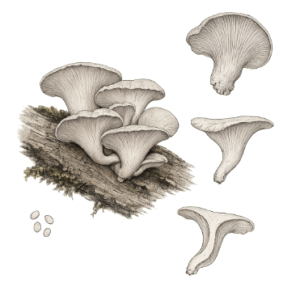
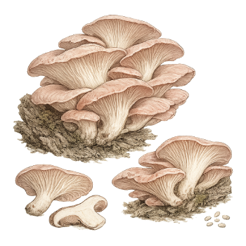

Shiitake
Lentinula edodes
Explorar ficha →Muestra de diseño · Datos comerciales y de lote por confirmar. No recibe pedidos.
Descubre las setas desde su forma hasta su origen. Una colección para explorar, preguntar y elegir con más información.
Detrás de cada productoUna historia con origenExplorar →Una primera mirada a la colección.
Explora las especies de esta muestra. La ficha de shiitake permite probar la selección de formato; las demás presentan la colección visual.
4 especies en la colección.
Lentinula edodes
Explorar ficha →
Pleurotus ostreatus
Ficha en preparación.

Hericium erinaceus
Ficha en preparación.

Pleurotus djamor
Ficha en preparación.